정보처리기사(구) (2010-09-05 기출문제)
1과목: 데이터 베이스
1. 물리적 저장 장치의 입장에서 본 데이터베이스 구조로서 실제로 데이터베이스에 저장될 레코드의 형식을 정의하고 저장 데이터 항목의 표현 방법, 내부 레코드의 물리적 순서 등을 나타내는 스키마는?
- Relational schema
- External schema
- Conceptual schema
- Internal schema
(정답률: 75%)

2. 다음 설명이 의미하는 것은?
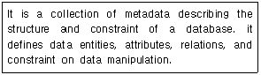
- Data Dictionary
- Primary Key
- Transaction
- Schema
(정답률: 73%)
3. 다음 자료에 대하여 인서션(insertion) 정렬 기법을 사용하여 오름차순으로 정렬하고자 한다. 2회전 후의 결과는?
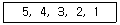
- 4,3,2,1,5
- 2,3,4,5,1
- 4,5,3,2,1
- 3,4,5,2,1
(정답률: 71%)
4. 데이터베이스 설계 단계 중 응답시간, 저장 공간의 효율화, 트랜잭션 처리도와 가장 밀접한 관계가 있는 것은?
- 물리적 설계
- 논리적 설계
- 개념적 설계
- 요구조건 분석
(정답률: 71%)
5. 정규화의 목적으로 틀린 것은?
- 어떠한 릴레이션이라도 데이터베이스 내에서 표현 가능하게 만든다.
- 데이터 삽입시 릴레이션을 재구성할 필요성을 줄인다.
- 중복을 배제하여 삽입, 삭제, 갱신 이상의 발생을 도모한다.
- 효과적인 검색 알고리즘을 생성할 수 있다.
(정답률: 75%)
6. 정규화 과정 중 3NF에서 BCNF가 되기 위한 조건은?
- 결정자이면서 후보 키가 아닌 것 제거
- 다치 종속 제거
- 이행적 함수 종속 제거
- 부분적 함수 종속 제거
(정답률: 71%)
7. 다음 사항 중 릴레이션의 특징에 해당되지 않는 내용을 모두 나열한 것은?
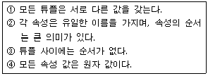
- ①②③④
- ①②③
- ①③④
- ②
(정답률: 41%)
8. 순차 파일에 대한 설명으로 틀린 것은?
- 대화식 처리보다 일괄 처리에 적합한 구조이다.
- 필요한 레코드를 삽입, 삭제, 수정하는 경우 파일을 재구성해야 한다.
- 연속적인 레코드의 저장에 의해 레코드 사이에 빈 공간이 존재하지 않으므로 기억 장치의 효율적인 이용이 가능하다.
- 파일 탐색 시 효율이 좋으며, 접근 시간 및 응답 시간이 빠르다.
(정답률: 70%)
9. 스택에 대한 설명으로 틀린 것은?
- 입출력이 한쪽 끝으로만 제한된 리스트이다.
- head(front)와 Tail(rear)의 2개 포인터를 갖고 있다.
- LIFO 구조이다.
- 오버플로우를 방지하기 위해 하나의 저장 공간에 2개의 스택을 설정할 수 있다.
(정답률: 62%)
10. 데이터 모델의 종류 중 CODASYL DBTG 모델과 가장 밀접한 관계가 있는 것은?
- 계층형 데이터 모델
- 네트워크형 데이터 모델
- 관계형 데이터 모델
- 스키마형 데이터 모델
(정답률: 58%)
11. 시스템카탈로그에 대한 설명으로 틀린 것은?
- 데이터베이스에 포함된 다양한 데이터 객체에 대한 정보들을 유지, 관리하기 위한 시스템 데이터베이스이다.
- 시스템카탈로그를 데이터 사전(Data Dictionary)라고도 한다.
- 시스템카탈로그에 저장된 정보를 메타데이터라고도 한다.
- 시스템카탈로그는 시스템을 위한 정보를 포함하는 시스템 데이터베이스이므로 일반 사용자는 내용을 검색할 수 없다.
(정답률: 78%)
12. 데이터 모델의 구성 요소 중 데이터베이스에 표현된 개체 인스턴스를 처리하는 작업에 대한 명세로서 데이터베이스를 조작하는 기본 도구에 해당하는 것은?
- Operation
- Constraint
- Structure
- Relationship
(정답률: 70%)
13. 다음 기법과 가장 관계되는 것은?
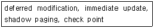
- Locking
- Integrity
- Recovery
- Security
(정답률: 43%)
14. 다음 그림에서 트리의 차수(degree)는?
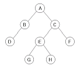
- 1
- 2
- 3
- 4
(정답률: 75%)
15. 뷰에 대한 설명으로 틀린 것은?
- 뷰는 데이터 접근을 제어하게 함으로써 보안을 제공한다.
- 뷰는 그 정의를 변경할 수 없다.
- 뷰는 데이터의 논리적 독립성을 제공한다.
- 뷰에 대한 삽입, 삭제, 갱신 연산은 기본 테이블에 대한 연산과 동일하다
(정답률: 59%)
16. 병행 제어 기법을 적용하지 않을 경우의 문제점 중 하나의 트랜잭션 수행이 실패한 후 회복되기 전에 다른 트랜잭션이 실패한 갱신 결과를 참조하는 현상은?
- Lost Update
- Inconsistency
- Cascading Rollback
- uncommitted Dependency
(정답률: 43%)
17. 다음 문장의 괄호에 공통 적용될 수 있는 것은?
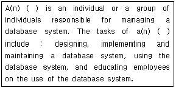
- TRANSACTION
- OLAP
- DBMS
- DBA
(정답률: 54%)
18. 다음 설명의 괄호 안 내용으로 가장 적합한 것은?
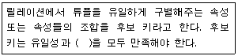
- 중복성
- 최소성
- 참조성
- 동일성
(정답률: 69%)
19. 데이터베이스의 특성 중 다음 설명에 해당하는 것은?
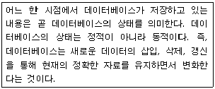
- Time Accessibility
- Continuos Evolution
- Concurrent Sharing
- Content Reference
(정답률: 72%)
20. 트랜잭션을 취소하는 이외의 조치를 명세할 필요가 있는 경우 메시지를 보내 어떤 값을 자동적으로 갱신하도록 프로시저를 기동시키는 방법은?
- 트리거(trigger)
- 무결성(integrity)
- 잠금(lock)
- 복귀(rollback)
(정답률: 75%)
2과목: 전자 계산기 구조
21. 자기테이프 등과 같은 대 용량의 보조 기억장치의 내용을 직접 접근이 가능한 영역으로 이동하여 컴퓨터 시스템에서 자료를 접근할 수 있도록 하는 기능을 무엇이라 하는가?
- saving
- storing
- staging
- spooling
(정답률: 42%)
22. 간접 사이클 동안에는 어떤 동작이 수행되는가?
- 기억 장치로부터 명령어의 주소를 인출한다.
- 기억 장치로부터 데이터를 인출한다.
- 기억 장치로부터 데이터의 주소를 인출한다.
- 기억 장치로부터 명령어를 인출한다.
(정답률: 53%)
23. 부호를 포함하여 6비트로 수를 표현할 때 오버플로우가 발생하는 경우는?
- 14+18
- 30-14
- -20 - 4
- 24+6
(정답률: 56%)
24. CPU내 레지스터들과 주기억장치에 다음과 같이 저장되어 있으며, CPU 레지스터 및 기억장소의 길이는 16비트이다. 이 때, 명령어 길이가 16비트이고 연산코드가 5비트라면 이 명령어에 의해 직접 주소 지정 될 수 있는 기억장치의 용량은?
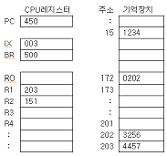
- 2^5
- 2^11
- 2^16
- 16
(정답률: 45%)
25. 배열처리기를 가진 컴퓨터에서 프로그램이 수행되는 곳은?
- 제어처리기
- 제어기억장치
- 국부기억장치
- 벡터인스트럭션
(정답률: 49%)
26. 기억소자 중 사용자가 읽기/쓰기를 임의로 할 수 없는 것은?
- ROM
- DRAM
- SRAM
- Core Memory
(정답률: 66%)
27. 가상기억장치에 대한 설명으로 틀린 것은?
- 가상기억장치의 목적은 주기억장치의 용량확보이다.
- 처리속도가 CPU 속도와 비슷하다.
- 소프트웨어적인 방법이다.
- 주기억장치의 이용률과 다중 프로그래밍의 효율을 높일 수 있다.
(정답률: 64%)
28. DMA 제어기에서 CPU와 I/O 장치 사이의 통신을 위해 필요한 것이 아닌 것은?
- address register
- word count register
- address line
- device register
(정답률: 43%)
29. 기억장치의 접근속도가 0.5㎲이고, 데이터 워드가 32비트 일 때 대역폭은?
- 8M[bit/sec]
- 16M[bit/sec]
- 32M[bit/sec]
- 64M[bit/sec]
(정답률: 41%)
30. Von Neumann형 컴퓨터의 연산자들이 가져야 하는 기능과 가장 거리가 먼 것은?
- 증폭 기능
- 제어(Control) 기능
- 전달(Transfer) 기능
- 함수 연산 기능
(정답률: 67%)
31. 다음은 어떤 마이크로 명령에 의해서 수행되는 경우인가? (단, AC는 누산기임)
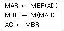
- BUN 명령
- STA 명령
- ISZ 명령
- LDA 명령
(정답률: 44%)
32. 파이프라인 프로세서(Pipeline Processor)의 설명 중 가장 적합한 것은?
- 2개 이상의 명령어를 동시에 수행할 수 있는 프로세서
- Micro Program에 의한 프로세서
- Bubble Memory로 구성된 프로세서
- Control Memory가 분리된 프로세서
(정답률: 61%)
33. 디스크 배열을 구성함으로써 얻을 수 있는 이점이 아닌 것은?
- 여러 블록들을 동시에 액세스할 수 있다.
- 저장 용량이 증가된다.
- 디스크 전송률이 높아진다.
- 신뢰도가 높아진다.
(정답률: 36%)
34. 일반적인 컴퓨터의 CPU 구조 가운데 수식을 계산할 때 수식을 미리 처리되는 순서인 역 polish(또는 postfix) 형식으로 바꾸어야 하는 CPU 구조는?
- 단일 누산기 구조 CPU
- 범용 레지스터 구조 CPU
- 스택 구조 CPU
- 모든 CPU 구조
(정답률: 58%)
35. 한 명령의 Execute Cycle 중에 Interrupt 요청을 받아 Interrupt를 처리한 후 실행되는 사이클은?
- Fetch Cycle
- Indirect Cycle
- Execute Cycle
- Direct Cycle
(정답률: 58%)
36. 상대주소지정 방식을 사용하는 JUMP 명령어가 750 번지에 저장되어 있다. 오퍼랜드 A=56 일 때와 A=-61일 때 몇 번지로 Jump 하는가?
- 806, 689
- 56,745
- 807, 690
- 56,689
(정답률: 54%)
37. 중앙처리장치가 인출(Fetch) 상태인 경우에 제어점을 제어하는 것은?
- 플래그(flag)
- 명령어(instruction)
- 인터럽트 호출 신호
- 프로그램 카운터
(정답률: 34%)
38. 인터럽트 체제의 기본 요소가 아닌 것은?
- 인터럽트 오류 신호
- 인터럽트 요청 신호
- 인터럽트 처리 루틴
- 인터럽트 취급 루틴
(정답률: 48%)
39. 연관기억(associative memory) 장치에 대한 설명 중 옳지 않은 것은?
- 고속 메모리에 속한다.
- Mapping table 구성에 주로 사용한다.
- 주소에 의해 접근하지 않고 기억된 내용의 일부를 이용할 수 있다.
- CPU의 속도와 메모리의 속도 차이를 줄이기 위해 사용되는 고속 Buffer Memory이다.
(정답률: 48%)
40. 서로 다른 19개의 정보가 있을 경우, 이 중에서 하나를 선택하려면 최소 몇 개의 비트가 필요한가?
- 19비트
- 18비트
- 5비트
- 4비트
(정답률: 62%)
3과목: 운영체제
41. 스레싱(Thrashing) 현상을 해결하는 방법으로 틀린 것은?
- 다중 프로그래밍 정도를 증가시킨다.
- 프로세스가 필요로 하는 만큼의 프레임을 제공하여 예방한다.
- 일부 프로세스를 종료시킨다.
- 부족한 자원을 증설한다.
(정답률: 60%)
42. UNIX에 대한 설명으로 틀린 것은?
- 상당 부분 C 언어를 사용하여 작성되었으며, 이식성이 우수하다.
- 사용자는 하나 이상의 작업을 백그라운드에서 수행할 수 있어 여러 개의 작업을 병행 처리할 수 있다.
- 쉘(shell)은 프로세스 관리, 기억장치 관리, 입출력 관리 등의 기능을 수행한다.
- 두 사람 이상의 사용자가 동시에 시스템을 사용할 수 있어 정보와 유틸리티들을 공유하는 편리한 작업 환경을 제공한다.
(정답률: 70%)
43. UNIX 파일 시스템에서 실제 파일들에 대한 데이터와 디렉토리별 디렉토리 엔트리가 보관되는 블록은?
- 데이터 블록
- 부트 블록
- 슈퍼 블록
- I-node 블록
(정답률: 51%)
44. 다음 설명에 해당하는 디스크 스케줄링 기법은?
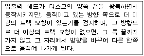
- SLTF
- Eschenbach
- LOOK
- SSTF
(정답률: 38%)
45. 운영체제의 성능평가 요인 중 다음 설명에 해당하는 것은?
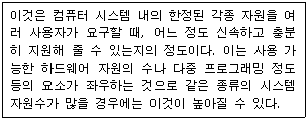
- Throughput
- Availability
- Turn around Time
- Reliability
(정답률: 56%)
46. 다중 처리기 운영체제 형태 중 주/종(master/slave) 시스템에 대한 설명으로 옳지 않은 것은?
- 주 프로세서와 종 프로세서 모두 운영체제를 수행한다.
- 비대칭 구조를 갖는다.
- 주 프로세서는 입출력과 연산을 담당하고 종 프로세서는 연산만 담당한다.
- 주 프로세서가 고장 나면 시스템 전체가 다운된다.
(정답률: 71%)
47. 분산처리 시스템에 대한 설명으로 옳지 않은 것은?
- 점진적 확장이 용이하다.
- 신뢰성 및 가용성이 증진된다.
- 시스템 자원을 여러 사용자가 공유할 수 있다.
- 중앙 집중형 시스템에 비해 시스템 개발이 용이하다.
(정답률: 65%)
48. 파일 보호 기법 중 다음 설명에 해당하는 것은?
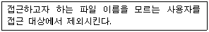
- Naming
- Password
- Access Control
- Cryptography
(정답률: 59%)
49. 다중 처리(Multi-processing) 시스템에 대한 설명으로 가장 적합한 것은?
- 요구사항이 비슷한 여러 개의 작업을 모아서 한꺼번에 처리하는 방식이다.
- 동시에 프로그램을 수행할 수 있는 CPU를 여러 개 두고 업무를 분담하여 처리하는 방식이다.
- 시한성을 갖는 자료가 발생할 때마다 즉시 처리하여 결과를 출력하거나, 요구에 응답하는 방식이다.
- 분산된 여러 개의 단말기에 분담시켜 통신회선을 통하여 상호간에 교신, 처리하는 방식이다.
(정답률: 62%)
50. 파일 디스크립터에 대한 설명으로 옳지 않은 것은?
- 사용자가 직접 관리하므로 사용자가 참조할 수 있다.
- 파일을 관리하기 위해 시스템이 필요로 하는 정보를 보관한다.
- 일반적으로 보조기억장치에 저장되어 있다가 파일이 개방(open)될 때 주기억장치로 옮겨진다.
- File Control Block 이라고도 한다.
(정답률: 66%)
51. 기억장치 배치 전략과 그에 대한 설명으로 옳게 짝지어진 것은?
- 최적 적합 - 가용 공간 중에서 가장 작은 공백이 남는 부분에 배치
- 최고 적합 - 가용 공간 중에서 가장 마지막 분할 영역에 배치
- 최초 적합 - 가용 공간 중에서 가장 큰 공백이 남는 부분에 배치
- 최악 적합 - 가용 공간 중에서 첫 번째 분할 영역에 배치
(정답률: 76%)
52. 운영체제의 기능으로 틀린 것은?
- 자원의 스케줄링 기능을 제공한다.
- 자원보호 기능을 제공한다.
- 사용자와 시스템 간의 편리한 인터페이스를 제공한다.
- 목적프로그램과 라이브러리, 실행 프로그램 등을 연결하여 실행 가능한 로드 모듈을 만든다.
(정답률: 69%)
53. 다음 설명에 해당하는 디렉토리 구조는?
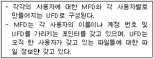
- 트리 디렉토리 구조
- 일반적인 그래프 디렉토리 구조
- 비순환 그래프 디렉토리 구조
- 2단계 디렉토리 구조
(정답률: 59%)
54. 다중 처리기 구조 중 강결합 시스템에 대한 설명으로 옳지 않은 것은?
- 프로세서 간 통신은 공유메모리를 통하여 이루어진다.
- 각 시스템은 자신만의 독자적인 운영체제와 주기억장치를 가진다.
- 다중 처리 시스템이라고도 한다.
- 공유 메모리를 차지하려는 프로세서간의 경쟁을 최소화해야 한다.
(정답률: 65%)
55. UNIX에서 파일 시스템의 무결성을 검사하는 명령은?
- chown
- cat
- fsck
- mount
(정답률: 65%)
56. 3개의 페이지를 수용할 수 있는 주기억장치가 있으며, 초기에는 모두 비어 있다고 가정한다. 다음의 순서로 페이지 참조가 발생할 때, FIFO페이지 교체 알고리즘을 사용할 경우 몇 번의 페이지 결함이 발생하는가?
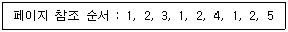
- 4
- 5
- 6
- 7
(정답률: 54%)
57. 교착상태와 무한대기에 대한 설명으로 옳지 않은 것은?
- 컴퓨터 시스템에서 무한 대기와 교착상태가 발생하는 것은 모두 바람직하지 않다.
- 무한대기 문제는 aging 기법으로 해결할 수 있다.
- 은행원 알고리즘은 교착상태를 회피(avoidance)하기 위한 알고리즘이다.
- 교착상태 회복(recovery)기법으로는 점유 및 대기부정, 비선점 부정, 환형대기 부정 등이 있다.
(정답률: 54%)
58. RR(Round-Robin) 스케줄링에 대한 설명으로 틀린 것은?
- “(대기시간+서비스시간)/서비스시간”의 계산으로 우선순위를 처리한다.
- 시간 할당이 작아지면 프로세스 문맥 교환이 자주 일어난다.
- Time Sharing System을 위해 고안된 방식이다.
- 시간 할당이 커지면 FCFS 스케줄링과 같은 효과를 얻을 수 있다.
(정답률: 60%)
59. FIFO스케줄링에서 3개의 작업 도착시간과 CPU 사용시간(burst time)이 다음 표와 같다. 이 때 모든 작업들의 평균 반환 시간(turn around time)은? (단, 소수점 이하는 반올림 처리한다.)
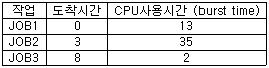
- 33
- 20
- 17
- 16
(정답률: 55%)
60. 프로세스 제어블록(Process Control Block)에 대한 설명으로 옳지 않은 것은?
- 프로세스에 할당 된 자원에 대한 정보를 갖고 있다.
- 프로세스의 우선순위에 대한 정보를 갖고 있다.
- 부모 프로세스와 자식 프로세스는 PCB를 공유한다.
- 프로세스의 현 상태를 알 수 있다.
(정답률: 62%)
4과목: 소프트웨어 공학
61. 럼바우 분석 기법에서 정보 모델링이라고도 하며, 시스템에서 요구되는 객체를 찾아내어 속성과 연산 식별 및 객체들 간의 관계를 규정하여 객체 다이어그램으로 표시하는 모델링은?
- 객체 모델링
- 동적 모델링
- 기능 모델링
- 정적 모델링
(정답률: 69%)
62. 객체지향 분석 기법 중 다음 설명에 해당하는 것은?
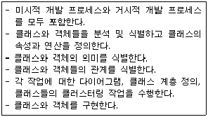
- Wirfs-Brock 방법
- Jacobson 방법
- Booch 방법
- Coad와 Yourdon 방법
(정답률: 39%)
63. 소프트웨어 프로젝트 관리를 효과적으로 수행하는데 필요한 3P로 옳은 것은?
- people, problem, process
- problem, process, package
- people, problem, publicity
- people, process, program
(정답률: 75%)
64. 검증(validation)검사 기법 중 최종 사용자가 여러 사용자 앞에서 실업무를 가지고 소프트웨어에 대한 검사를 직접 수행하는 기법은?
- 베타 검사
- 알파 검사
- 형상 검사
- 단위 검사
(정답률: 61%)
65. DFD(data flow diagram)에 대한 설명으로 거리가 먼 것은?
- 자료 흐름 그래프 또는 버블(bubble)차트라고도 한다.
- 구조적 분석 기법에 이용된다.
- 시간 흐름의 개념을 명확하게 표현할 수 있다.
- DFD의 요소는 화살표, 원, 사각형, 직선(단선/이중선)으로 표시한다.
(정답률: 50%)
66. 장래의 유지보수성 또는 신뢰성을 개선하거나 소프트웨어의 오류발생에 대비하여 미리 예방수단을 강구해두는 경우의 유지보수 형태는?
- Corrective maintenance
- Perfective maintenance
- Preventive maintenance
- Adaptive maintenance
(정답률: 69%)
67. 다음 그래프에서 McCabe 방법에 의한 V(G)의 크기는?
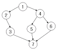
- 1
- 3
- 7
- 13
(정답률: 56%)
68. 프로젝트 팀 구성의 종류 중 분산형 팀 구성에 대한 설명으로 틀린 것은?
- 의사결정이 민주주의 식이다.
- 프로젝트 수행에 따른 모든 권한과 책임을 한 명의 관리자에게 위임한다.
- 다양한 의사 교류로 인해 의사 결정 시간이 늦어질 수 있다.
- 팀 구성원 각자가 서로의 일을 검토하고 다른 구성원이 일한 결과에 대해 같은 그룹의 일원으로 책임진다.
(정답률: 75%)
69. CASE가 갖고 있는 주요 기능이 아닌 것은?
- 그래픽 지원
- 소프트웨어 생명주기 전 단계의 연결
- 언어 번역
- 다양한 소프트웨어 개발 모형 지원
(정답률: 63%)
70. 소프트웨어 재사용과 관련하여 객체들의 모임, 대규모 재사용 단위로 정의 되는 것은?
- Sheet
- Component
- Framework
- Cell
(정답률: 54%)
71. 소프트웨어 재공학(Re-engineering)과정에 포함되지 않는 것은?
- analysis
- restructuring
- migration
- software reuse
(정답률: 58%)
72. 다음 사항과 관계되는 결합도는?
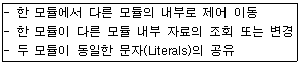
- Data Coupling
- Content Coupling
- Control Coupling
- Stamp Coupling
(정답률: 44%)
73. 생명 주기 중 프로토타이핑(Prototyping)모형에 대한 설명으로 틀린 것은?
- 개발자가 사용자의 요구사항을 미리 파악하기 위한 메커니즘으로서의 역할을 수행한다.
- 의뢰자나 개발자 모두에게 공동의 참조 모델을 제공한다.
- 시제품은 사용자와 시스템 사이의 인터페이스에 중점을 두어 개발한다.
- 점진적 모형이라고도 한다.
(정답률: 57%)
74. 소프트웨어 위기 발생 요인과 거리가 먼 것은?
- 소프트웨어 개발 정체 현상
- 프로젝트 개발 일정과 예산 측정의 어려움
- 소프트웨어 생산성 기술의 낙후
- 소프트웨어 규모의 증대와 복잡도에 따른 개발 비용 감소
(정답률: 67%)
75. LOC기법에 의하여 예측된 총 라인수가 50000라인, 개발 참여 프로그래머가 5인, 프로그래머의 월 평균 생산성이 200라인일 때, 개발 소요 기간은?
- 2000개월
- 200개월
- 60개월
- 50개월
(정답률: 74%)
76. 객체지향 시스템에서 전통적 시스템의 함수(function) 또는 프로시저(procedure)에 해당하는 연산기능은?
- 메소드(method)
- 메시지(message)
- 모듈(module)
- 패키지(package)
(정답률: 68%)
77. 블랙박스 검사 기법 중 다음 설명에 해당하는 것은?
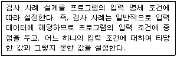
- 경계값 분석
- 원인 효과 그래픽 기법
- 동치 분할 검사
- 비교 검사
(정답률: 44%)
78. 시스템 검사의 종류 중 통합 시스템의 맥락에서 소프트웨어의 실시간 성능을 검사하며, 모든 단계에서 수행되는 것은?
- 복구 검사
- 보안 검사
- 성능 검사
- 강도 검사
(정답률: 74%)
79. 다음 설명의 ( )내용으로 옳은 것은?
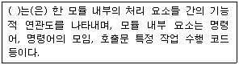
- Validation
- Coupling
- Cohesion
- Interface
(정답률: 50%)
80. 소프트웨어 품질 목표 중 새로운 요구사항에 접하여 쉽게 수정될 수 있는 시스템 능력을 의미하는 것은?
- Integrity
- Portability
- Usability
- Flexibility
(정답률: 55%)
5과목: 데이터 통신
81. TCP 프로토콜을 사용하는 응용 계층의 서비스가 아닌 것은?
- SNMP
- FTP
- Telnet
- HTTP
(정답률: 52%)
82. LAN의 매체 접근 제어 방식인 CSMA/CD에 대한 설명으로 틀린 것은?
- 버스 또는 트리 토폴로지에서 가장 많이 사용되는 매체 접근 제어 방식이다.
- MA(Multiple Access)는 네트워크가 비어 있으면 누구든지 사용 가능하다.
- CS(Carrier Sense)는 네트워크에 데이터를 실어 보내는 기능을 담당한다.
- CD(Collision Detection)는 프레임을 전송하면서 충돌 여부를 조사한다.
(정답률: 37%)
83. 호스트의 물리 주소를 통하여 논리 주소인 IP 주소를 얻어오기 위해 사용되는 프로토콜은?
- ICMP
- IGMP
- ARP
- RARP
(정답률: 48%)
84. 핸드오프(Hand-off)시에 사용할 채널을 먼저 확보하여 연결한 후, 현재 사용 중인 채널의 연결을 끊는 방식은?
- Soft Hand-off
- Hard Hand-off
- Mobile Controlled Hand-off
- Network Controlled Hand-off
(정답률: 43%)
85. 다음은 OSI(Open System Interconnection) 7계층 중 어떤 계층에 대한 설명인가?
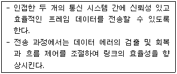
- 물리 계층
- 데이터 링크 계층
- 전송 계층
- 네트워크 계층
(정답률: 57%)
86. 다음 중 통신망의 체계적인 운용 및 관리를 위한 TMN(Telecommunication Management Network)의 기능 요소에 해당하지 않는 것은?
- SNL(Service Network Layer)
- NML(Network Management Layer)
- EML(Element Management Layer)
- NEL(Network Element Layer)
(정답률: 41%)
87. 경로 지점 방식에서 각 노드에 도착하는 패킷을 자신을 제외한 다른 모든 것을 복사하여 전송하는 방식은?
- 고정 경로 지점
- 플러딩
- 임의 경로 지점
- 적응 경로 지정
(정답률: 60%)
88. 다음이 설명하고 있는 데이터 링크 제어 프로토콜은?
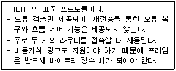
- HDLC
- PPP
- LAPB
- LLC
(정답률: 45%)
89. 데이터 통신에서 오류를 검출하는 기법으로 틀린 것은?
- Parity Check
- Block Sum Check
- Cyclic Redundancy Check
- Huffman Check
(정답률: 58%)
90. 전송 매체상의 전송 프레임마다 해당 채널의 시간 슬롯이 고정적으로 할당되는 다중화 방식은?
- 주파수 분할 다중화
- 동기식 시분할 다중화
- 통계적 시분할 다중화
- 코드 분할 다중화
(정답률: 58%)
91. 디지털 변조에서 디지털 데이터를 아날로그 신호로 변환시키는 것을 키잉(Keying)이라고 하며, 키잉은 기본적으로 3가지 방식이 있다. 이에 해당하지 않는 것은?
- Amplitude-Shift Keying
- Code-Shift Keying
- Frequency-Shift Keying
- Phase-Shift Keying
(정답률: 51%)
92. 에러 제어에 사용되는 자동반복요청(ARQ) 기법이 아닌 것은?
- stop-and-wait ARQ
- go-back-N ARQ
- auto-repeat ARQ
- selective-repeat ARQ
(정답률: 59%)
93. 최초의 라디오 패킷(radio packet) 통신방식을 적용한 컴퓨터 네트워크 시스템은?
- DECNET
- ALOHA
- SNA
- ARPANET
(정답률: 61%)
94. 효율적인 전송을 위하여 넓은 대역폭(혹은 고속 전송 속도)을 가진 하나의 전송링크를 통하여 여러 신호(혹은 데이터)를 동시에 실어 보내는 기술은?
- 회선 제어
- 다중화
- 데이터 처리
- 전위 처리기
(정답률: 70%)
95. 동기식 시분할 다중화(Synchronous TDM)의 설명으로 틀린 것은?
- 전송 시간을 일정한 간격의 시간 슬롯으로 나누고, 이를 주기적으로 각 채널에 할당한다.
- 하나의 프레임은 일정한 수의 시간 슬롯으로 구성된다.
- 전송데이터가 있는 경우에만, 시간 슬롯을 할당하여 데이터를 전송한다.
- 송신단에서는 각 채널의 입력 데이터를 각각의 채널 버퍼에 저장하고, 이를 순차적으로 읽어 낸다.
(정답률: 56%)
96. 다음이 설명하고 있는 것은?
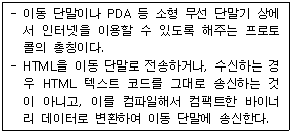
- HTTP
- FTP
- SMTP
- WAP
(정답률: 63%)
97. 문자 동기 전송방식에서 데이터 투명성(Data Transparent)을 위해 삽입되는 제어문자는?
- ETX
- STX
- DLE
- SYN
(정답률: 61%)
98. 다음 ( ) 안에 들어 갈 알맞은 용어는?
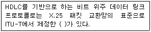
- LAPB
- LAPD
- LAPS
- LAPF
(정답률: 60%)
99. 데이터 전송에 있어 데이터 그램 패킷 교환 방식으로 적합한 것은?
- 음성이나 동영상과 같이 연속적인 전송
- 응답시간이 별 문제가 되지 않는 전자 우편이나 파일 전송
- 간헐적으로 발생하는 짧은 메시지의 전송
- 최대 길이가 제한된 데이터 전송
(정답률: 39%)
100. HDLC(High-level Data Link Control)의 정보 프레임에 대한 용도 및 기능으로 가장 적합한 것은?
- 사용자 데이터 전달
- 흐름 제어
- 에러제어
- 링크제어
(정답률: 43%)